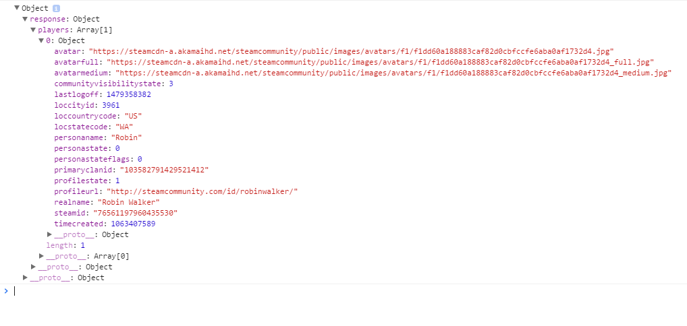

How-To Guide: Steam Web API
By Josh Erickson
Using the Data
In this section, we'll be discussing how to use the data that the Steam API sends back when a request is made. In the previous example, we simply logged the response object to the console. This lets us see the object if we inspect the webpage and open the object up to view it's properties, but it's not very useful for someone using the website. However, to illustrate what this looks like, if we were to make an API call to Steam for GetPlayerSummaries using the Steam ID: 76561197960435530 and logged the response to the console, the output would look like this:

As you can see, we have gotten the information for a Steam user with the name Robin who lives in Washington, USA. We can see that his profile state is 1,
his real name is Robin Walker, a link to his avatar picture, etc. Most of this would be useless data to someone wanting to know anything about this profile.
The only things that are easy to interpret are the persons name and where they live. So we have two jobs in making use of this data. One, interpreting the
data for the user so that it has some meaning. Two, getting this data onto the page, displayed in some convenient way for the user.
Getting the data we want
So now that we have gotten a response object with some potentially useful information in it, say we want to store some of this information in a variable so that we can print it to the webpage somewhere later. For example, if we wanted to get at the personaname property of this object, we could follow the path that we need in this object to get that pretty easily. First we want to reference the Object, which we have named response, then we see another response object below that, then a players array with one thing in it, that thing being the [0] object in the array, and we are then able to choose the property we want to access. So if we wanted to access the players personaname, we could use the code below to get it.
response.response.players[0].personaname;
Some of the Steam API methods return multiple objects, extracting data from these is a simple matter of finding which object you want to pull data from in the returned array, or if you want to pull a piece of data from multiple objects, simply setting up a for in loop to get that data and store it in an array to print it to your webpage. In the example I have on the next page, I simply pulled a few variables from the GetPlayerSummaries method, interpreted them for the user, and printed them to the screen. I'll go over how I did that now, then you can move on to the next page and see the API call example.
Gamer Tag:
span id = "profileName" span
Date Last Online:
span id = "lastLogged"
Current State:
id = "currentState"
On the example in the next page, I allow the user to input a Steam ID and then print the Gamer Tag, Date Last Online, and the account Current State to the screen as it looks above. I do this by pulling those 3 properties from the response object returned for the input Steam ID, interpreting those properties for the user, and then populating those 3 spans with that data. The Gamer Tag information doesn't need any interpretation, but the Date Last Online is given with a Unix timestamp, which is pretty useless to the user, and the Current State simply returns a number 1-6, which again, doesn't have much use for the someone looking at this information.
document.getElementById('profileName').textContent = response.response.players[0].personaname;
Above is the code I used to populate the profileName span, I simply grabbed the personaname property from the response object and populated the span with that information.
document.getElementById('lastLogged').textContent = convertTimestamp(response.response.players[0].lastlogoff);
//Credit for this function goes to kmaida, https://gist.github.com/kmaida/6045266
function convertTimestamp(timestamp) {
var d = new Date(timestamp * 1000), // Convert the passed timestamp to milliseconds
yyyy = d.getFullYear(),
mm = ('0' + (d.getMonth() + 1)).slice(-2), // Months are zero based. Add leading 0.
dd = ('0' + d.getDate()).slice(-2), // Add leading 0.
hh = d.getHours(),
h = hh,
min = ('0' + d.getMinutes()).slice(-2), // Add leading 0.
ampm = 'AM',
time;
if (hh > 12) {
h = hh - 12;
ampm = 'PM';
} else if (hh === 12) {
h = 12;
ampm = 'PM';
} else if (hh == 0) {
h = 12;
}
// ie: 2013-02-18, 8:35 AM
time = yyyy + '-' + mm + '-' + dd + ', ' + h + ':' + min + ' ' + ampm;
return time;
}
Above are the two pieces of code that I used to interpret the UNIX timestamp contained in the lastlogoff property. The function was one I found on github, I passed the UNIX timestamp into that, then populated the lastLogged span with the result.
document.getElementById('currentState').textContent = currState(response.response.players[0].personastate);
function currState(x) {
switch (x) {
case 0:
return "Offline";
case 1:
return "Online";
case 2:
return "Busy";
case 3:
return "Away";
case 4:
return "Snooze";
case 5:
return "Looking to trade";
case 6:
return "Looking to play";
}
}
And above are the two pieces of code that I used to interpret the profilestate property of the response object. profilestate returns a number from
0-6, the currState function converts that to the correct State, and the currentState span is then populated.
Most of this code is pretty simple
once the response object has been returned, printing it to the webpage is a simple matter of getting the property you want, interpreting the result,
and putting it somewhere on the webpage for the user to see. Most of the Steam API methods are pretty similar to this one, so if you understand this,
you can use all of the Steam API methods with ease.
If you want to see the an API call made, move on to the next page. (Note you need to be VPN'd in
to the OSU servers in order to get data back from the request).